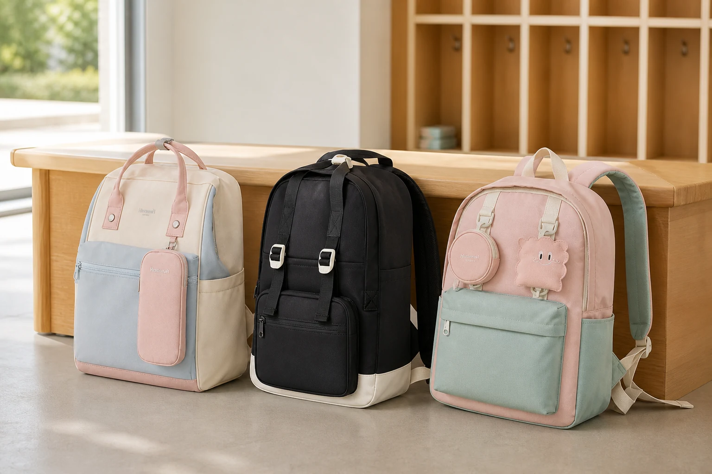

신학기 우리 아이 백팩은 어떻게 골라야 하나요?

신학기 아이 백팩은 아이 몸에 맞는 크기, 어깨가 불편하지 않은 착용감, 스스로 물건을 찾기 쉬운 수납 순서로 골라야 합니다. 색과 디자인은 아이의 취향을 함께 확인해야 실제로 자주 멜 수 있습니다.
아이 몸에 맞는 크기와 끈을 확인하세요
아이 백팩은 오래 쓸 수 있는 큰 크기보다 지금의 몸과 매일 챙기는 준비물에 맞는지가 중요합니다. 평소 준비물을 넣고 어깨끈을 조절한 뒤 가방이 한쪽으로 기울거나 몸에서 너무 멀리 뜨지 않는지 살펴보세요.
어깨끈이 목 가까이를 누르지 않는지, 아이가 혼자 끈 길이를 조절할 수 있는지도 확인하면 좋습니다. 체스트벨트가 포함된 제품은 아이가 직접 잠그고 풀 수 있는지 함께 연습해 보세요.
아이가 스스로 찾기 쉬운 수납을 고르세요
교과서와 필통, 물병처럼 자주 쓰는 물건의 자리가 단순할수록 아이가 스스로 정리하기 쉽습니다. 큰 수납칸이 몇 개인지보다 어떤 물건을 어디에 둘지 아이가 이해할 수 있는 구성이 더 중요합니다.
- 교과서와 노트를 세워 넣을 수 있는 공간
- 필통과 작은 소지품을 찾기 쉬운 앞주머니
- 물병을 다른 물건과 나눠 둘 수 있는 자리
- 이름표나 자주 쓰는 물건을 둘 위치
소재와 마감은 직접 만져 보고 살펴보세요
아이도 사용하는 가방이기 때문에 Himawari는 소재, 착용감과 수납을 쉽게 타협하기 어려운 기준으로 봅니다. 제품 설명에서 소재 정보를 확인하고, 지퍼와 손잡이, 어깨끈 연결부처럼 자주 힘을 받는 부분의 마감도 함께 살펴보세요.
새 가방의 냄새나 촉감이 아이에게 불편하지 않은지 확인하고, 사용 전 관리 방법은 제품 안내에 따르는 것이 좋습니다. 화면에 없는 인증이나 기능을 추측하지 말고 표시된 제품 정보만 기준으로 판단하세요.
아이의 취향을 마지막 선택에 반영하세요
보호자가 편리하다고 생각하는 가방도 아이가 색과 모양을 좋아하지 않으면 손이 자주 가지 않을 수 있습니다. 다양한 디자인을 모든 사람의 취향에 맞추는 일은 어렵기 때문에, 필요한 기능을 먼저 좁힌 뒤 아이가 색을 고르게 해보세요.
Himawari 학생용 제품 중 No.1027은 넉넉한 수납 구성을, No.1088M은 가볍게 메는 일상을, No.0422는 여러 색의 데일리 구성을 비교할 때 살펴볼 수 있습니다. 제품 페이지에서 각 모델의 사진과 정보를 아이와 함께 확인해 보세요.
참고·출처
자주 묻는 질문
아이 책가방은 오래 쓰려고 크게 사도 되나요?
지금 몸에 비해 지나치게 크면 움직일 때 불편할 수 있습니다. 현재 준비물이 들어가면서 아이 몸에 맞는 크기를 먼저 보세요.
체스트벨트는 꼭 필요한가요?
아이의 체형과 활동 방식에 따라 선택할 수 있습니다. 벨트가 있다면 아이가 혼자 편하게 잠그고 풀 수 있는지 확인해 보세요.
아이와 가방 색을 어떻게 고르면 좋을까요?
필요한 크기와 수납을 먼저 정한 뒤 그 안에서 아이가 좋아하는 색을 고르게 해보세요. 매일 드는 물건인 만큼 아이의 의견도 중요합니다.